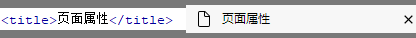

第四讲 |
知识点三 |
1：标题标记
格式：<title>网页的标题</title>

说明:该标记在<head></head>标记中，所包含的文字将出现在浏览器的标题栏上。当用户将此页面添加到收藏夹时，也会默认已该标题为名称收藏。
|
2：主体标记
格式：<body bgcolor="页面背景颜色"background="背景图片"text="文本颜色">主题内容</body>
说明：包括所有主题内容，可以设置页面的背景颜色 背景图像 文字颜色等属性。背景颜色和文本颜色可是使用颜色名（如蓝色：blue）或者颜色代码值（如蓝色：#0000FF）来表示。 |
3：文字标记
格式：<font size="文字大小"face="字体"color="文本颜色">文本内容</font>
说明：<font>标记用于设置网页中文字的字体 字号 颜色等属性。设置字号时，<font size=>(最小) <font size=7>(最大) <font size=+1>(比预设大一级）<font size=-1>(比预设小一级)。
|